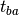
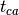

About¶
This is the primary site for the distribution of the python package lieb_tb, from Charles Poli at Lancaster University.
Motivations¶
The lieb_tb package models a two-dimensional face centered square lattice within the tight-binding framework. The hoppings and the onsite energies can be real and/or complex valued. Defects in the lattice can be introduced by modifying the hoppings locally or by introducing defect in the dimerization pattern. In the case of alternating hoppings, the system can be viewed as a 2D extention of the so-called Shockley [Sho39] and SSH [Su79] models. Note that these systems acquired recently a renewed interest considering complex onsites energies allowing to amplify the topologically protected midgap state [Sch13], [Pol15].
The lattice is defined by:
- three sublattices named A, B and C. The unit cell is given by:
four hoppings:
- In the
direction: the intradimer coupling
which links the A sites to the B sites, and the interdimer hopping  which links the B sites to the A sites.
- In the
direction: the intradimer coupling
which links the A sites to the B sites, and the interdimer hopping  which links the C sites to the A sites.
{kind=link}
The class lieb_tb can
- obtain the spectrum (eigenenergies of the tight-binding Hamiltonian) and the probability densities of the states of the system (absolute value squared eigenvectors of the Hamiltonian).
- obtain the polarization of the A sublattice (the sum of the probability densities of the A sites)
- select states by introducing a condition on the A sublattice polarization (revealing zero modes and/or localized states).
- test the robustness to disorder by implementing hopping disorder.
- get the time evolution of the field (using the Crank-Nicolson method).
- get the time evolution of the field with adiabatic pumping (smooth variation of the hoppings).
References¶
| [Sho39] | W. Shockley, On the surface states associated with a periodic potential. Phys. Rev. 56, 317 (1939) |
| [Su79] | W.P. Su, J.R. Schrieffer, and A.J. Heeger, Solitons in conducting polymers. Phys. Rev. Lett. 42, 1698 (1979). |
| [Sch13] | Schomerus, H. Topologically protected midgap states in complex photonic lattices. Opt. Lett. 38, 1912–1914 (2013). |
| [Pol15] | C. Poli, M. Bellec, U.Kuhl, F. Mortessagne, and H. Schomerus, Selective enhancement of topologically induced interface states in a dielectric resonator chain. Nat. Commun. 6 6710, (2015). |
Feedback¶
Please send comments or suggestions for improvement to cpoli83 at hotmail dot fr